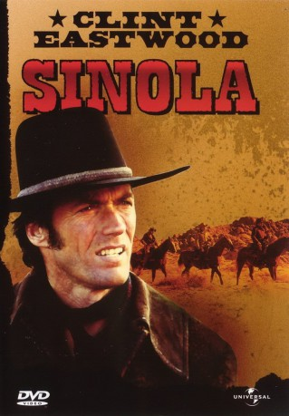
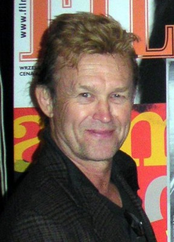

#3299 Sinola
Alternativ: Joe Kidd
 
 IMDB-Wertung: 6.5 / 10
IMDB-Wertung: 6.5 / 10  Metascore: 52
Metascore: 52 
Schauplatz ist das amerikanisch-mexikanische Grenzgebiet. Der schwerreiche Großgrundbesitzer Frank Harlan (Robert Duvall) beschließt noch reicher zu werden, und eignet sich kurzerhand die Ländereien seiner mexikanischen Nachbarn an. Fast gleichzeitig brennt das Amtshaus ab, und mit ihm alle Aufzeichnungen, die den Grundbesitz beurkunden. Klar, daß die Mexikaner sich das nicht gefallen lassen. Angetrieben von ihrem Anführer Luis Chama (John Saxon), holen sie zum Gegenschlag aus. Nur ein Mann steht zwischen den beiden Parteien: der Revolverheld Joe Kidd (Clint Eastwood)...
Jahr: 1972
Dauer: 87 Minuten
FSK: 16
Land: USA Studio: Universal PicturesTonspuren:
Untertitel: Deutsch,
Auflösung: 720p (1280x544) Größe: 3358 MB
Genre: Western
Regisseur: John Sturges
Drehbuch: Elmore Leonard
Soundtrack: Lalo Schifrin
Darsteller:
 Clint Eastwood als Joe Kidd
Clint Eastwood als Joe Kidd Robert Duvall als Frank Harlan
Robert Duvall als Frank Harlan John Saxon als Luis Chama
John Saxon als Luis Chama Don Stroud als Lamarr
Don Stroud als Lamarr- James Wainwright als Mingo
-  Paul Koslo als Roy
 Gregory Walcott als Mitchell
Gregory Walcott als Mitchell Dick Van Patten als Hotel Manager
Dick Van Patten als Hotel Manager Joaquín Martínez als Manolo
Joaquín Martínez als Manolo- Michael R. Horst als Deputy
- Stella Garcia als Helen Sanchez
- Lynne Marta als Elma
 John Carter als Judge
John Carter als Judge- Pepe Hern als Priest
- Ron Soble als Ramon
- Pepe Callahan als Naco
 Clint Ritchie als Calvin
Clint Ritchie als Calvin- Gil Barreto als Emilio
- Ed Deemer als Bartender
- Maria Val als Vita
 Chuck Hayward als Eljay
Chuck Hayward als Eljay- Doug Greenough als Local Hire , uncredited
- Archie Harrison als Local Hire , uncredited
- Rick Kahana als Altar Boy , uncredited
- Tony Kahana als Boy , uncredited
- Mark Klinkowsky als Local Hire , uncredited
- Ron Manning als Local Hire , uncredited
- Fred McDougall als Gunman , uncredited
- Steve Miller als Local Hire , uncredited
- Read Morgan als Cowboy , uncredited
- Steve Moriarty als Citizen , uncredited
- John Quijada als Bandito , uncredited
- A.L. Ward als Local Hire , uncredited
- Troy Ward als Local Hire , uncredited
Datei: X:\HD-Western-1960-1979\Sinola (1972, FSK16, 1280x544).mkv seit 06.03.2016
Festplatte: HD Eastern+Western
 Es gibt insgesamt 110 Filme in der Gruppe 'HD-Western-1960-1979'
Es gibt insgesamt 110 Filme in der Gruppe 'HD-Western-1960-1979'